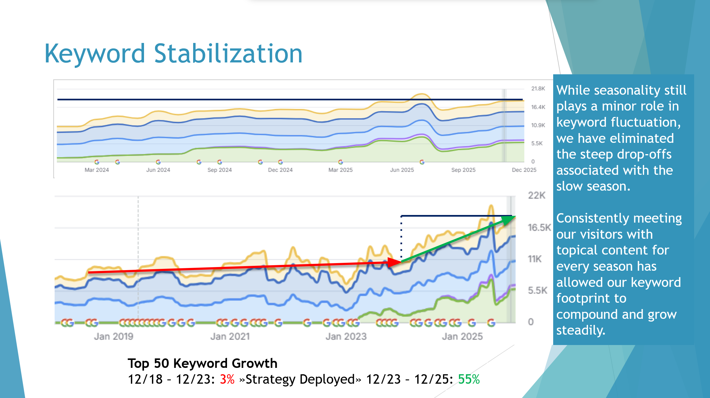
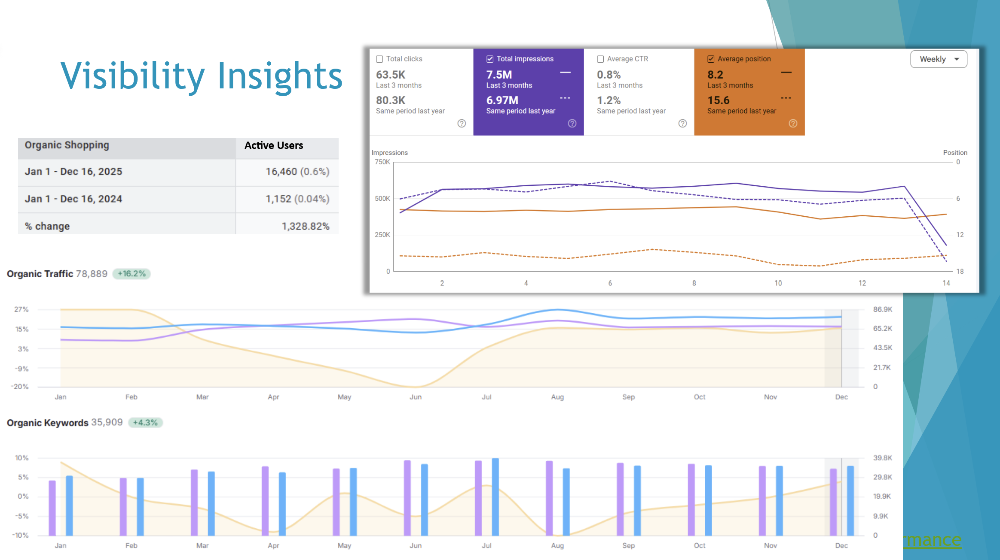

Seasonal keyword volatility is not a traffic problem. It is a content architecture problem. Once you treat it that way, the fix is straightforward — and the compounding starts immediately.
From December 2018 through December 2023, top-50 keywords declined 3% over five years combined. The site performed well during peak season, built up rankings through the busy months, and then the off-season arrived. Search intent shifted to queries the site had no content for, and rankings reset close to zero. Five years of the same cycle, each reset undoing months of progress.
The problem was not seasonality itself. Every outdoor category has it. The problem was that the content only covered peak-season intent. Niche off-season searches and year-round ownership queries had little to land on. Without content to rank for in those months, there was no reason for Google to maintain rankings through the cycle.
The core insight: Seasonal volatility is a content architecture problem, not a traffic problem. The site was not losing rankings because of algorithm shifts or competitor moves. It was losing them because it had nothing to rank for in the off-season. Fill those gaps with authoritative content and the floor holds.
The first step was identifying what the target audience actually searches for in every month of the year, not just the busy ones. Off-season searchers have real, specific needs. Natural-language, searchable queries with real volume, low competition, and no existing coverage from a site that had been treating the slow season as a content pause.
A 12-month editorial calendar was built with five topic areas per month, selected for seasonal intent fit, topical relevance, and competitive opportunity. Off-season months received priority treatment — they had the widest gap between audience need and existing content.
Google evaluates topical authority at the domain level. A site that covers its subject area comprehensively, across all subtopics, seasons, and intent types, earns stronger rankings across all its pages. The content program was structured in clusters: a primary topic with supporting articles filling out the full semantic neighborhood. Each cluster lifted the domain's authority signal on that subject, compounding with each new piece added.
The editorial calendar was not a spreadsheet guess. It was built on a custom Looker Studio demand heatmap — designed and architected for this engagement — that mapped real search volume by topic and calendar month across the full year. That visualization made the opportunity gaps visible in a way a flat keyword list never does. Off-season months with genuine audience demand and no competitive coverage showed up immediately. Content was placed where the heatmap showed the widest gap between demand and supply. The calendar was updated quarterly as new data came in.
New content was only part of the program. The existing article library was audited for HCU-era content quality signals, such as thin semantic coverage, keyword-stuffed titles, intent mismatches, buried answers. Flagged articles were systematically revised and re-indexed. Rankings and click data were tracked weekly. At the six-month milestone, 60.9% of revised articles had achieved significant keyword gains, 30.4% were holding stable, and 8.7% were still working through the index cycle.
On attribution: Strategy, framework architecture, and full execution were handled by a single strategist. The 2,099 new domain keywords this program produced — 91% of all new keywords acquired in 2025 — came from one person running the complete loop from heatmap design to content placement to ranking outcome.
The HCU classifier evaluates how thoroughly a piece of content covers its subject — not how many times it uses the target keyword. Articles that had been written as keyword-targeted thin content needed to be rebuilt as genuine subject-matter coverage. The results below show what that shift produces at the article level.
This was not a one-off result. The same article revision approach — rebuild for semantic completeness, match title to actual search intent, structure for extractability — produced measurable keyword gains across 60.9% of the revised library. The waterfall article was the standout, but 4 KW to 25+ KW was a common outcome across dozens of revisions in the same six-month window.
The revision program addressed existing gaps. The editorial calendar filled the forward ones. Every month has five assigned topic areas mapped to real search demand for that period. Off-season months are the highest-leverage entries, with genuine audience need, lowest competitive coverage, and the exact queries that had been causing annual ranking resets.
Aggregate numbers tell the outcome. Individual URLs tell the mechanism. Three patterns in the article-level data make the framework's logic concrete.
Articles published in March 2025, right as busy season opened, produced the highest top-50 keyword counts in the dataset by December. Freshwater frogs at 180 keywords, algaecide safety at 161, best fish for small ponds at 108. Eight to nine months of compounding through peak season is what that publish timing produced. The heatmap identified when to publish. Lead time did the rest.
The December 2024 through February 2025 cohort — spring-fed ponds, crawfish farming, murky water clearing — sat at 60 to 68 top-50 keywords each by December 1. Written during the dead of winter on topics with genuine cold-weather demand. These are the articles holding the traffic floor that previously reset to near-zero each off-season. The aggregate chart shows the floor held. These URLs are what is holding it.
Koi content produced four of the top-performing articles in the dataset: 188, 99, 87, and 67 top-50 keywords respectively, across four separate pieces. No single koi article explains that pattern. The cluster does. Each piece reinforces the domain's authority signal on the topic, and every new addition compounds the return on the ones before it. That is topical cluster architecture producing a measurable outcome at the URL level.
The articles published in November 2025 currently rank for zero top-50 keywords. That is not underperformance. It is the next off-season cohort in the pipeline — following the exact same trajectory as the December 2024 articles that now deliver 60-plus keywords each. The strategy is continuous by design.
SEMRush Domain Report · Google Search Console · August 2024
The final results in the section below are full-year 2025 data. But the mechanism was already producing at the six-month checkpoint in August 2024 — halfway through the first year of execution. These numbers are from the August 2024 monthly performance report, documented in real time.
The band chart below shows the full keyword position breakdown for October 2023 through August 2024 — the strategy deployment window. Every band is growing. SERP Features grew 183% in this period alone, from 1,826 to 5,177, reflecting both the new content earning featured placements and the revised articles picking up snippet positions.
Organic traffic grew 28% year-over-year by August 2024, from 67,025 to 86,475 monthly visits. Paid traffic declined 33% in the same period as the organic channel absorbed queries that had previously required paid support. Organic growth displacing paid spend is one of the cleaner signals that the content program is doing its job at a domain level, not just at the article level.
Average position improved from 15.6 to 11.9 on a last-three-months YoY comparison — a 24% improvement at the halfway mark. Total impressions grew 18%, from 9.57M to 11.3M. These are the same position trend lines that end at 8.2 in the 2025 final data, which means the full improvement arc is visible: 15.6 at strategy start, 11.9 at six months, 8.2 at full year.
Of the 2,295 new domain keywords acquired in 2025, 2,099 traced directly to this content strategy. That 91% attribution rate is the clearest answer to the question every client eventually asks: how much of this result is actually the strategy versus ambient domain growth? Here, the answer is measurable.
The keyword stabilization chart shows the full arc across six years. From 2019 through late 2023, growth was slow and the footprint oscillated seasonally. The strategy deployment point is visible. After that, the off-season floor stopped dropping and the overall trajectory shifted from flat to compounding.

Keyword Stabilization — Top-50 Growth: 3% (2018–2023) vs. 55% (2023–2025)
The monthly click data makes the floor change concrete. Off-season months still see lower volume than peak — that is expected and honest. What changed is that they now deliver consistent five-figure monthly click volumes instead of the near-zero resets of the previous five years.
Off-season months previously reset to near-zero rankings each cycle. Post-strategy, those same months delivered between 16,143 and 24,473 monthly clicks. The position improvement arc runs continuously: 15.6 at strategy start → 11.9 at six months → 8.2 at full year.

Google Search Console Full Year — 78,889 Organic Visits (+16.2%) · 7.5M Impressions · Avg. Position 8.2
If your rankings reset every off-season, the fix is architectural. An Audit identifies exactly where the gaps are and what closing them is worth.
Book an AI Visibility Audit